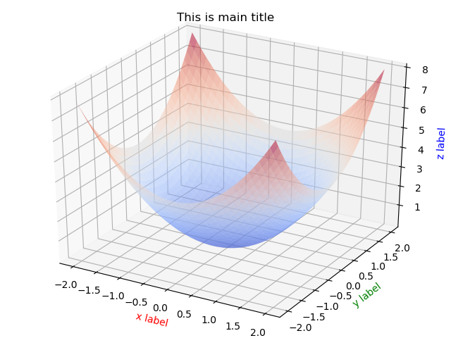

学习并尝试了利用matplotlib进行3D函数图像的绘制
1 import matplotlib.pyplot as plt # 绘图用的模块
2 from mpl_toolkits.mplot3d import Axes3D # 绘制3D坐标的函数
3 import numpy as np
4
5
6 def fun(x, y):
7 return np.power(x, 2) + np.power(y, 2)
8
9
10 fig1 = plt.figure() # 创建一个绘图对象
11 ax = Axes3D(fig1) # 用这个绘图对象创建一个Axes对象(有3D坐标)
12 X, Y = np.mgrid[-2:2:40j, -2:2:40j] # 从-2到2分别生成40个取样坐标，并作满射联合
13 Z = fun(X, Y) # 用取样点横纵坐标去求取样点Z坐标
14 plt.title("This is main title") # 总标题
15 ax.plot_surface(X, Y, Z, rstride=1, cstride=1, cmap=plt.cm.coolwarm, alpha=0.5) # 用取样点(x,y,z)去构建曲面
16 ax.set_xlabel('x label', color='r')
17 ax.set_ylabel('y label', color='g')
18 ax.set_zlabel('z label', color='b') # 给三个坐标轴注明
19 plt.show() # 显示模块中的所有绘图对象具体输出结果如下：
